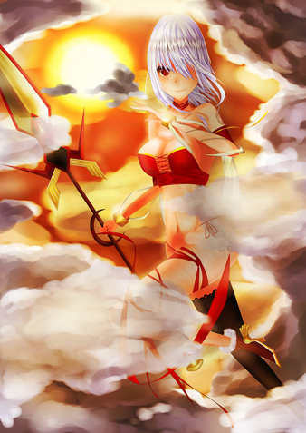

<div id="article_content" class="text-paragraph article_container">補圖<div><br></div><div>女武神資料上好像是穿紅袍</div><div>我只是布料少了點(義正嚴詞</div><div><br></div><div>上圖:</div><div><br></div><div><br></div><div><br></div><div>有點時間的作品，身體結構還抓得不好</div><div>練習了許多濾鏡效果(後來幾乎沒再用過....</div><div>理念其實忘了差不多..</div><div><br></div><div><br></div><div>喜歡還請來<a href="https://www.facebook.com/Bushyeyebrowscat/" target="_blank">專頁</a>坐坐</div><div><br></div><div>更多清晰大圖和無節操(X還請至:<a href="http://www.pixiv.net/member.php?id=6856401" target="_blank">P站</a></div><div><a href="http://www.pixiv.net/member.php?id=6856401" target="_blank">http://www.pixiv.net/member.php?id=6856401</a></div><script>
$('article.c-text img').load(function () {
// 表格內圖片大於表格寬時，設為 100%
if ($(this).parents('table').length != 0) {
if ($(this).width() >= $(this).parents('td').width()) {
$(this).width('100%');
} else {
$(this).width($(this).width() + 'px');
}
}
});
</script></div>